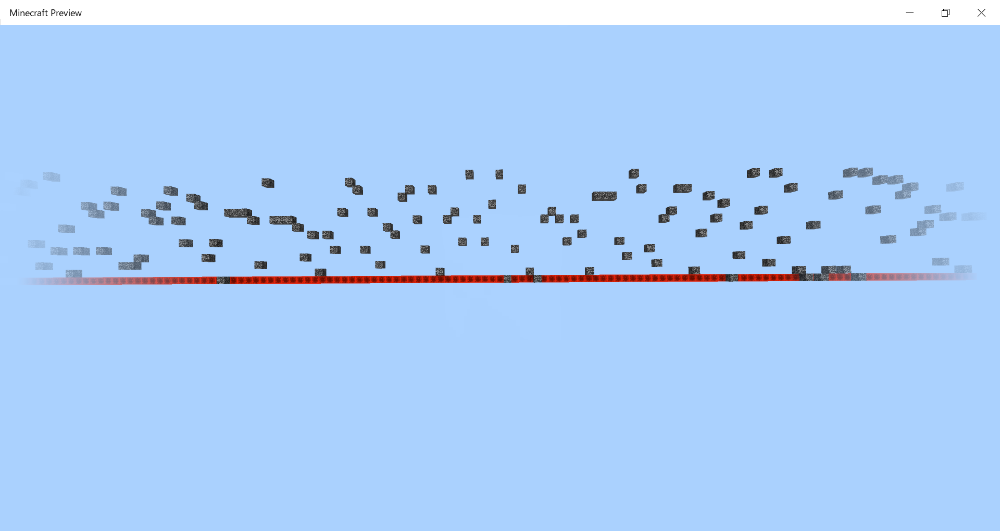
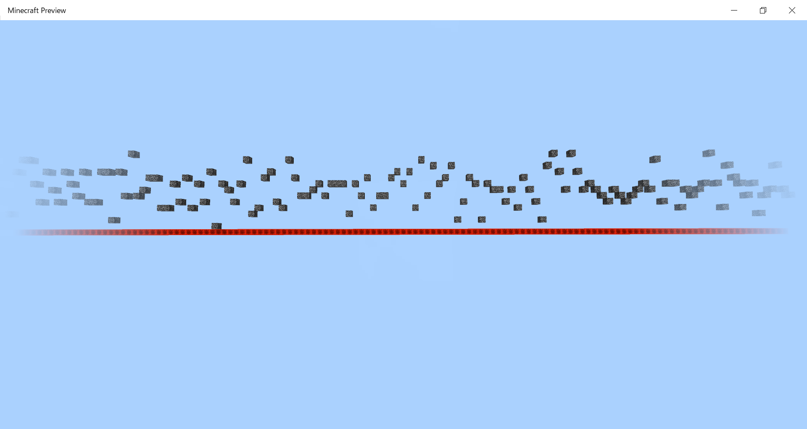
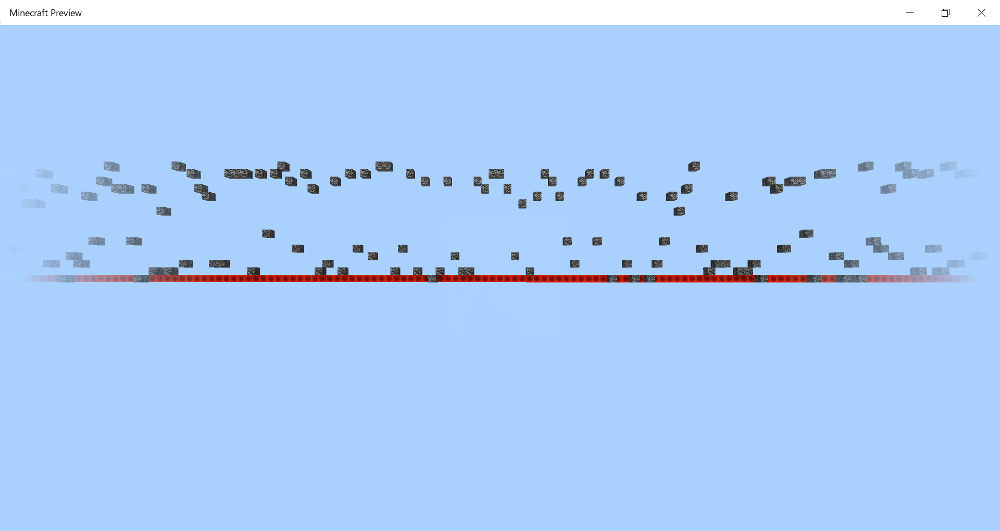
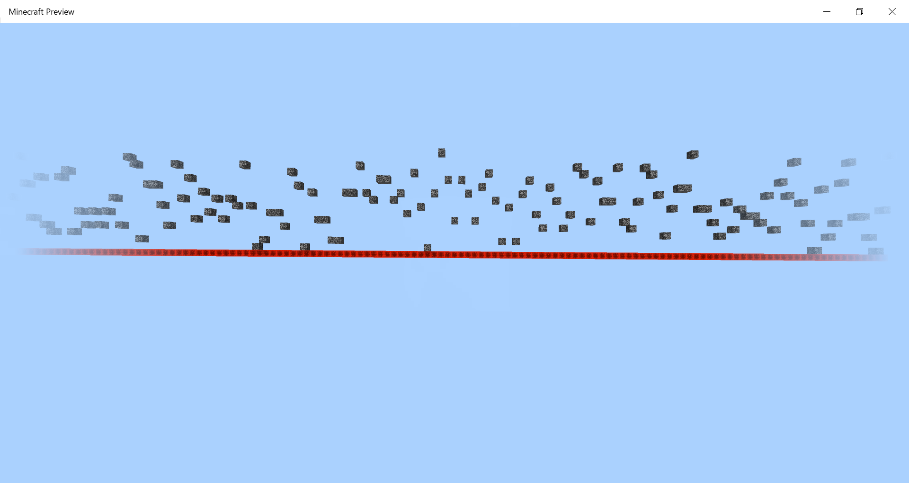

アドオン詳細解説 - フィーチャー
目次 (折りたたみ可)
基本事項
フィーチャーとは
フィーチャー(feature)とは、村や難破船などの構造物や、草花や木、鉱石などのワールドの装飾のようなもののことです。 アドオンでオリジナルのフィーチャーを追加・生成することができます。
追加・生成のしくみ
まず、フィーチャールール(feature_rule)によってどんな場所に生成されるかをバイオーム単位で指定します。 そのフィーチャールールと定義したフィーチャーを紐づけることで生成できます。
フィーチャールール
ファイルの場所
(ビヘイビア)
┣ manifest.json
┣ pack_icon.png
┗ feature_rules
┗ 〇〇.json
基本構造
{
"format_version": "1.13.0",
"minecraft:feature_rules": {
"description": {
"identifier": "ex:my_feature_rule",
"places_feature": "(フィーチャーID)"
},
"conditions": {
"placement_pass": "underground_pass",
"minecraft:biome_filter": [
{
"any_of": [
{ "test": "has_biome_tag", "value": "overworld" },
{ "test": "has_biome_tag", "value": "overworld_generation" }
]
}
]
},
"distribution": {
"iterations": 20,
"coordinate_eval_order": "zyx",
"x": {
"distribution": "uniform",
"extent": [ 0, 16 ]
},
"y": {
"distribution": "uniform",
"extent": [ 0, 64 ]
},
"z": {
"distribution": "uniform",
"extent": [ 0, 16 ]
}
}
}
}
具体的な説明
まず、 "identifier"にIDを書き、 "places_feature"には生成するフィーチャーのIDを指定します
IDはファイル名と必ず一致させてください。ファイル名が「my_feature.json」ならIDは "(アドオンID):my_feature"のようにします。
placement_pass [Str]
生成試行の順番。選べる値は以下の通り。
| (先) |
|---|
| "first_pass" |
| "before_underground_pass" |
| "underground_pass" |
| "after_underground_pass" |
| "before_surface_pass" |
| "surface_pass" |
| "after_surface_pass" |
| "before_sky_pass" |
| "sky_pass" |
| "after_sky_pass" |
| "final_pass" |
| (後) |
minecraft:biome_filter
バイオームのフィルター。書き方はエンティティフィルターと同じ。
iterations [Int]
生成試行回数。
coordinate_eval_order [Str]
座標の処理順。値は "xyz"、"xzy"、"yxz"、"yzx"、"zxy"、"zyx"から選びます。
以下は"xzy"ならどうなるかを表した例です。 y軸は描いてありませんが、左下のスタートから右上のゴールまで同じ高さ(y軸)で処理が終わったら、 次の高さ(+1)で同じように処理をします。
distribution [Str]
分布の方式。値は "uniform"、"gaussian"、"inverse_gaussian"、 "triangle"、"fixed_grid"、"jittered_grid"から選べます。
| 値 | 概要 | イメージ |
|---|---|---|
| "uniform" | 一様分布。偏りがない。 |  |
| "gaussian" | 正規分布。範囲の真ん中に寄る。 |  |
| "inverse_gaussian" | 逆正規分布。範囲の端に寄る。 |  |
| "triangle" |  |
"fixed_grid"、 "jittered_grid"の場合は設定項目が増えます。
"x": {
"distribution": "fixed_grid",
"step_size": 1,
"grid_offset": 0,
"extent": [ 0, 15 ]
}
"fixed_grid"は("step_size" - 1)マス飛ばしで範囲に応じて整列します。
extent [Int-2/Molang-2]
散らばりの範囲。チャンクの端(0, 0, 0)が基準です。
フィーチャー
ファイルの場所
ビヘイビア
┣ manifest.json
┣ pack_icon.png
┗ feature
┗ 〇〇.json
全体的な説明
フィーチャーにはたくさんの種類があり、それぞれのタイプで書き方が異なります。 それぞれのタイプをこのサイト独自で名づけて分けたので、以下で例を参照してください。
| タイプ名 | 例 |
|---|---|
| 鉱石型 | 鉱石 |
| 晶洞型 | アメジスト晶洞 |
| 洞窟型 | 洞窟 |
| ネザー洞窟型 | ネザーの洞窟 |
| 水中洞窟型 | 水中の洞窟 |
| 長い植物型 | グロウベリー |
| 樹木型 | 任意の木 |
| 1ブロック型 | 任意の1ブロック |
| 散乱型 | 草花 |
| 探知型 | ハチの巣 |
| ストラクチャ型 | 任意の1ブロック |
ここからはタイプごとに分けて説明します。
フィーチャー・鉱石型
基本構造
{
"format_version": "1.13.0",
"minecraft:ore_feature": {
"description": {
"identifier": "ex.my_ore"
},
"count": 8,
"discard_chance_on_air_exposure": 0.7,
"replace_rules": [
{
"places_block": "ex:my_ore",
"may_replace": [ "minecraft:stone" ]
}
// ...
]
}
}
count [Int(1~)]
何個のかたまりで生成されるか。1個だと生成してくれません(理論上正しいにも拘わらず)。
1個の鉱石を生成したい場合は1ブロック型で擬似的に実装してください。
discard_chance_on_air_exposure [Float(0.0~1.0)]
壁に露出しない確率。最大にすれば必ず完全に埋まって生成されます。
replace_rules
"places_block"で生成するブロック(鉱石)を指定し、 "may_replace"でどのブロックを置き換えて生成するかを指定(複数可)します。
"replace_rules": [
{
"places_block": "minecraft:diamond_ore",
"may_replace": [ "minecraft:stone" ]
}
]
フィーチャー・晶洞型
基本構造
{
"format_version": "1.13.0",
"minecraft:geode_feature": {
"description": {
"identifier": "ex:my_geode"
},
"filler": "minecraft:air",
"inner_layer": "minecraft:diamond_block",
"alternate_inner_layer": "minecraft:emerald_block",
"middle_layer": "minecraft:calcite",
"outer_layer": "minecraft:obsidian",
"inner_placements": [
{
"name": "minecraft:amethyst_cluster",
"states": { "amethyst_cluster_type": "small" }
}
],
"min_outer_wall_distance": 4,
"max_outer_wall_distance": 7,
"min_distribution_points": 3,
"max_distribution_points": 5,
"min_point_offset": 1,
"max_point_offset": 3,
"max_radius": 16,
"crack_point_offset": 2.0,
"generate_crack_chance": 0.95,
"base_crack_size": 2.0,
"noise_multiplier": 0.025,
"use_potential_placements_chance": 0.35,
"use_alternate_layer0_chance": 0.083,
"placements_require_layer0_alternate": true,
"invalid_blocks_threshold": 1
}
}
filler [Str]
中心部を何で埋めるか。バニラのアメジスト晶洞は空洞なので空気が指定されています。
inner_layer, alternate_inner_layer [Str]
内側の殻を構成するブロック(2つ)。バニラのアメジスト晶洞なら、アメジストブロックとアメジストの芽ブロックですね。
middle_layer [Str]
中殻を構成するブロック。バニラのアメジスト晶洞なら方解石ですね。
outer_layer [Str]
外側の殻を構成するブロック。バニラのアメジスト晶洞なら磨かれた玄武岩ですね。
inner_placements [Str]
バニラのアメジスト晶洞なら生えているアメジスト本体の部分。
min_outer_wall_distance, max_outer_wall_distance [Int(1~)]
殻の厚さの最大値(max)と最小値(min)。最大値は 20まで、最小値は 10まで指定できます。
min_distribution_points, max_distribution_points [Int(1~)]
inner_placements生成場所の数の最大値(max)と最小値(min)。最大値は 20まで、最小値は 10まで指定できます。
min_point_offset, max_point_offset [Int(0~10)]
inner_placements生成場所ずれの最大値(max)と最小値(min)。
max_radius [Int]
全体の半径の最大値。
crack_point_offset [Int(0~10)]
割れ目の位置のずれ。
generate_crack_chance [Float(0.0~1.0)]
割れ目を生成する確率。
base_crack_size [Float(0.0~5.0)]
割れ目の大きさ。
noise_multiplier [Float]
use_potential_placements_chance [Float(0.0~1.0)]
use_alternate_layer0_chance [Float(0.0~1.0)]
placements_require_layer0_alternate [Bool]
invalid_blocks_threshold [Int]
フィーチャー・洞窟型、ネザー洞窟型
基本構造
{
"format_version": "1.16.100",
"minecraft:cave_carver_feature": {
"description": {
"identifier": "ex:my_cave"
},
"fill_with": "minecraft:air",
"width_modifier": "0.0",
"skip_carve_chance": 15,
"height_limit": 100,
"y_scale": [ 1.0, 1.5 ],
"horizontal_radius_multiplier": [ 1.0, 1.25 ],
"vertical_radius_multiplier": [ 1.0, 2.5 ],
"floor_level": [ 1.0, 1.5 ]
}
}
ネザー洞窟型の場合はマーカ部分を"minecraft:hell_cave_carver_feature"に変えます。
fill_with [Str]
洞窟を埋めるブロック。普通に洞窟にするなら空気を指定します。
width_modifier [Molang]
skip_carve_chance [Int(1~)]
height_limit [Int]
高度の上限
y_scale [Float-2]
縦のスケールの範囲
horizontal_radius_multiplier [Float-2]
空洞の半径(横)の倍率
vertical_radius_multiplier [Float-2]
空洞の半径(縦)の倍率
floor_level [Float-2]
フィーチャー・水中洞窟型
基本構造
{
"format_version": "1.16.100",
"minecraft:underwater_cave_carver_feature": {
"description": {
"identifier": "ex:my_underwater_cave"
},
"fill_with": "minecraft:air",
"width_modifier": "0.0",
"skip_carve_chance": 15,
"height_limit": 100,
"y_scale": [ 1.0, 1.5 ],
"horizontal_radius_multiplier": [ 1.0, 1.25 ],
"vertical_radius_multiplier": [ 1.0, 2.5 ],
"floor_level": [ 1.0, 1.5 ],
"replace_air_with": "minecraft:flowing_water"
}
}
一つのプロパティを除いてすべて洞窟型、ネザー洞窟型と同じです。
replace_air_with [Str]
空気を置き換えるブロック。
フィーチャー・長い植物型
基本構造
{
"format_version": "1.16.0",
"minecraft:growing_plant_feature": {
"description": {
"identifier": "ex:my_long_plant"
},
"height_distribution": [
[ { "range_min": 1, "range_max": 13 }, 2 ],
[ { "range_min": 1, "range_max": 2 }, 3 ],
[ { "range_min": 1, "range_max": 7 }, 10 ]
],
"growth_direction": "DOWN",
"age": { "range_min": 17, "range_max": 26 },
"body_blocks": [
[ "minecraft:cave_vines", 4 ],
[ "minecraft:cave_vines_body_with_berries", 1 ]
],
"head_blocks": [
[ "minecraft:cave_vines", 4 ],
[ "minecraft:cave_vines_head_with_berries", 1 ]
],
"allow_water": true
}
}
height_distribution [Float-2]
高さの分布。
growth_direction [Str]
育つ向き。 "UP"で上、"DOWN"で下。
age
その植物の成長度。
body_blocks
2番目以降の、先端以外のブロックとその生成比率。
head_blocks
先端のブロックとその生成比率。
allow_water [Bool]
水中に生成されるか。
フィーチャー・樹木型
基本構造
{
"minecraft:tree_feature": {
"description": {
"identifier": "Str(NameSpaced)"
},
"base_block": "Str(BlockId)/Str-n(BlockId)",
"base_cluster": {
"may_replace": "Str-n(BlockId)",
"num_clusters": "Int(>=1)",
"cluster_radius": "Int(>=0)"
},
"may_grow_on": "Str-n(BlockId)",
"may_replace": "Str-n(BlockId)",
"may_grow_through": "Str-n(BlockId)",
// 幹
// 葉
}
}
フィーチャー・1ブロック型
基本構造
{
"format_version": "1.13.0",
"minecraft:single_block_feature": {
"description": {
"identifier": "ex:my_singleblock"
},
"places_block": "minecraft:diamond_block",
"enforce_placement_rules": true,
"enforce_survivability_rules": true,
"may_attach_to": {
"min_sides_must_attach": 1,
"auto_rotate": false,
"bottom": [ "minecraft:grass" ]
/*
"top": [ "minecraft:stone" ],
"north": [ "minecraft:stone" ],
"east": [ "minecraft:stone" ],
"south": [ "minecraft:stone" ],
"west": [ "minecraft:stone" ],
"all": [ "minecraft:stone" ],
"sides": [ "minecraft:stone" ]
*/
},
// "may_place_on": "Str-n(BlockId)",
"may_replace": [ "minecraft:air" ]
}
}
places_block [Str]
設置するブロック。
enforce_placement_rules [Bool]
プレイヤーなどが置けないような置き方にはできないようにするかどうか。
enforce_survivability_rules [Bool]
本来ならそのブロックが壊れてしまうような置き方にはできないようにするかどうか。
min_sides_must_attach [Int(1~4)]
接している必要がある面の最小数。
auto_rotate [Bool]
自動でランダムに回転して設置するかどうか。
接している必要がある面
指定したブロックと指定した面で接していないと生成されないようにできます。 "top"が上面、 "bottom"が底面、 "north"が北面、 "east"が東面、 "south"が南面、 "west"が西面、 "all"が全面、 "sides"が側面です。 指定しない面は書く必要ありません。
may_replace [Str]
生成のために置き換えるブロック。
フィーチャー・散乱型
基本構造
{
"format_version": "1.13.0",
"minecraft:scatter_feature": {
"description": {
"identifier": "ex:my_scatter_blocks"
},
"coordinate_eval_order": "xzy",
"places_feature": "ex:my_singleblock",
"project_input_to_floor": true,
"iterations": 4,
"scatter_chance": "Molang",
/* または
"scatter_chance": {
"numerator": "Int(>=1)",
"denominator": "Int(>=1)
},
*/
"x": "Int",
/* または
"x": {
"distribution": "Str",// "uniform", "gaussian", "inverse_gaussian", "triangle", "fixed_grid", "jittered_grid"
"extent": "Int-2",
"grid_offset": "Int(>=0)",
"step_size": "Int(>=1)"
},
*/
"y": "Int",
/* または
"y": {
"distribution": "Str",// "uniform", "gaussian", "inverse_gaussian", "triangle", "fixed_grid", "jittered_grid"
"extent": "Int-2",
"grid_offset": "Int(>=0)",
"step_size": "Int(>=1)"
},
*/
"z": "Int"
/* または
"z": {
"distribution": "Str",// "uniform", "gaussian", "inverse_gaussian", "triangle", "fixed_grid", "jittered_grid"
"extent": "Int-2",
"grid_offset": "Int(>=0)",
"step_size": "Int(>=1)"
}
*/
}
}
フィーチャールールと同じプロパティがほどんどで、実際意味も同じです。 フィーチャールールにないものを説明します。
project_input_to_floor [Bool]
地面に接するように生成するかどうか。
scatter_chance [Molang/Obj]
フィーチャー・探知型
基本構造
{
"format_version": "1.13.0",
"minecraft:search_feature": {
"description": {
"identifier": "ex:my_search_feature"
},
"places_feature": "ex:my_single_block",
"search_volume": {
"min": [ -2, -2, -2 ],
"max": [ 2, 2, 2 ]
},
"search_axis": "y-",
"required_successes": 2
}
}
places_feature [Str]
生成するフィーチャーのID。
search_volume
探知する範囲。 "min"が始点、"max"が終点。
search_axis [Str]
+x、-x、+y、-y、+z、-zから選ぶ。
required_successes [Int(1~)]
フィーチャー・ストラクチャ型
基本構造
{
"format_version": "1.13.0",
"minecraft:structure_template_feature": {
"description": {
"identifier": "ex:my_structure"
},
"structure_name": "mystructure:my_structure",
"adjustment_radius": 7,
"facing_direction": "random",
"constraints": {
"grounded": {},
"unburied": {},
"block_intersection": {
"block_allowlist": [ "minecraft:air" ]
/* または
"block_whitelist": "Str-n(BlockId)"
*/
}
}
}
}
structure_name [Str]
生成するストラクチャのID。
adjustment_radius [Int(0~16)]
facing_direction [Str]
正面の向き。 "north"、"south"、"east"、"west"、"random"から選ぶ。
grounded、unburied
"grounded"は地面から離れないように、"unburied"は地面に埋まらないようになります。
block_allowlist [Str-n]
このストラクチャと重なって置けるブロック
block_whitelist [Str-n]
このストラクチャと重なって置けないブロック